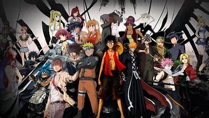

about anime
Anime is hand-drawn and computer-generated animation originating from Japan. Outside Japan and in English, anime refers specifically to animation produced in Japan. However, in Japan and Japanese, anime (a term derived from a shortening of the English word animation) describes all animated works, regardless of style or origin. Many works of animation with a similar style to Japanese animation are also produced outside Japan. Video games sometimes also feature themes and art styles that are sometimes labelled as anime. The earliest commercial Japanese animation dates to 1917. A characteristic art style emerged in the 1960s with the works of cartoonist Osamu Tezuka and spread in following decades, developing a large domestic audience. Anime is distributed theatrically, through television broadcasts, directly to home media, and over the Internet. In addition to original works, anime are often adaptations of Japanese comics (manga), light novels, or video games. It is classified into numerous genres targeting various broad and niche audiences. Anime is a diverse medium with distinctive production methods that have adapted in response to emergent technologies. It combines graphic art, characterization, cinematography, and other forms of imaginative and individualistic techniques. Compared to Western animation, anime production generally focuses less on movement, and more on the detail of settings and use of "camera effects", such as panning, zooming, and angle shots. Diverse art styles are used, and character proportions and features can be quite varied, with a common characteristic feature being large and emotive eyes.
